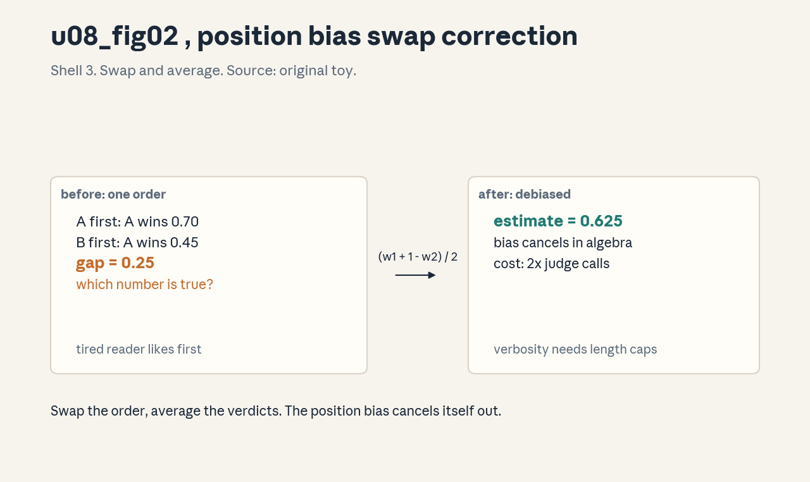
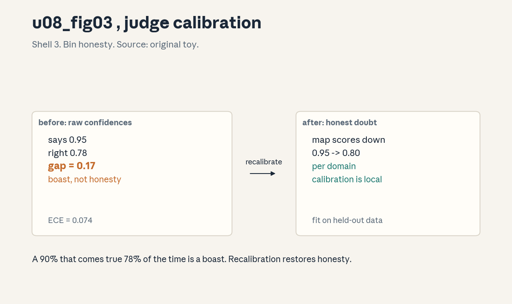
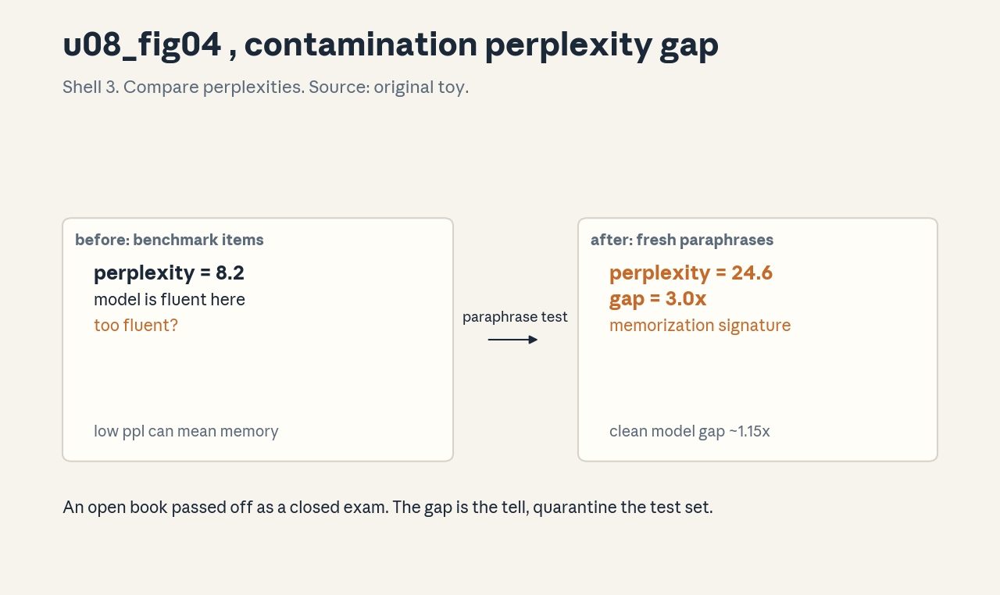

U08 · LLM evaluation and judging
U08 , LLM evaluation and judging
Prerequisites: P07, P10, P22. Bridge links in ../prerequisites.md.
Lecture anchor: L7 (Nov 13, 2026). Claim class: OFFICIAL-SYLLABUS for
judge rubrics, pointwise/pairwise judging, position/verbosity bias,
human checks, appropriate metrics, and benchmark interpretation.
REQUESTED-BRANCH for calibration, nondeterminism, blind evaluation,
contamination, uncertainty, and cost/latency. All leaves: PLANNED /
SOURCE ATTRIBUTION PENDING until slide or transcript extraction
verifies them.
Notation: see ../notation_and_shapes.md. Glossary: ../glossary.md.
Not yet understood
Concepts this unit uses but does not teach. Each one arrives in a later unit.
- Trends and synthesis (U09): diffusion, keystone review, exams.
Local remediation , win rate, ECE, confidence interval
Do this block first if the unit diagnostic flags P07 gaps.
R0.1 Win rate. Judge compares A vs B on n items. A wins w times. Win rate = w / n. Ties need a stated convention: drop them or count half.
R0.2 Expected calibration error. Bin predictions by confidence. ECE = sum over bins (fraction in bin) x |accuracy - confidence|. Perfect calibration gives 0.
R0.3 Wilson interval. For w wins in n trials, the 95% Wilson score interval is center = (p + z^2/2n)/(1 + z^2/n) with half-width z sqrt(p(1-p)/n + z^2/4n^2)/(1 + z^2/n), z = 1.96, p = w/n. n = 100, w = 62: [0.522, 0.709]. Small n means wide bands.
C01: judge rubrics
Leaf id cme295-U08-C01. Claim class OFFICIAL-SYLLABUS
(“best practices”, L7).
Status PLANNED / SOURCE ATTRIBUTION PENDING.
-
Source mapping, scope, objectives, dependencies. Maps to L7 “best practices”. Scope: writing the rubric the judge model follows. Objectives: write a three-criterion rubric and state the specificity rule. Depends on P22.
-
Motivating question and toy. Question: “which answer is better” gets shrugs from the judge, what fixes it? Toy rubric: correctness (does it solve the task), completeness (no missing steps), clarity (a reader can follow). Each scored 1-5 with one anchor example per level.
-
Mental model. The rubric is the law, the judge is the court. Vague law gives arbitrary verdicts. Each criterion needs a definition and an anchor, or the judge invents its own.
-
Objects, symbols, units, shapes, assumptions. Criteria list, scale (1-5 or binary), anchors, aggregation rule (mean or weighted). Assumption: the criteria cover what the user cares about, nothing important is unscored.
-
Derivation / mechanism. No derivation, a design rule: one criterion per valued property, anchors from real examples, pilot on 50 items, revise where judges disagree. The mechanism is disagreement-driven revision.
-
Computed example. From
labs/u08_lab_run.py(lab6 rubric): vague rubric, inter-judge agreement 0.58. Anchored rubric, agreement 0.81. The anchors bought 0.23 of agreement. -
Algorithm and reference implementation.
judge(item, rubric, model): prompt = rubric + item, return the parsed scores. The rubric is a string constant, versioned. -
Correctness checks and expected output. Check: two judge runs on 50 items agree above 0.75. Below that, the rubric is vague or the task is subjective.
-
Complexity, memory, statistical efficiency, stability, costs. Rubric writing costs expert hours once. Every vague criterion costs agreement on every future eval.
-
Nearest alternatives and selection boundaries. No rubric (fast, arbitrary). Human-only judging (gold, slow). Choose anchored rubrics for repeatable evals.
-
Failure case, broken assumption, counterexample. Broken assumption: criteria cover user value. Counterexample: the rubric scores style, users care about correctness. Validate the rubric against human preference first.
-
Research reading and falsifiable extension. Read the LLM-as-judge best-practice guides. Extension: ablate anchors vs no anchors, measure agreement delta.
-
Breadth recall, deep oral ladder, unfamiliar transfer. Recall: law and court. Ladder: define the rubric -> write the toy -> justify anchors -> implement judge -> predict the style-vs-correctness failure. Transfer: rubric for code review.
-
Lab/exercises with answers separated. E1: three criteria for math answers. E2: agreement 0.58, what is the first fix? E3: why version the rubric? Key:
../keys/u08_answers.mdR1-R3. -
Visual units, provenance, accessibility, audit rows. Figure
u08_fig01.png: Shell 3, one rule (rubric before/after), before vague prompt, after anchored rubric. Source: original toy. Numbers fromrender_u08.py.
C02: pointwise/pairwise
Leaf id cme295-U08-C02. Claim class OFFICIAL-SYLLABUS
(“LLM-as-a-judge overview”, L7).
Status PLANNED / SOURCE ATTRIBUTION PENDING.
-
Source mapping, scope, objectives, dependencies. Maps to L7 judge overview. Scope: scoring one answer vs comparing two. Objectives: state when each wins and compute a pairwise win rate. Depends on C01, R0.1.
-
Motivating question and toy. Question: is “7/10” or “A beats B” the better verdict? Toy: pointwise gives A 7, B 6, but the judge’s 7 means different things on different days. Pairwise asks directly, A wins 62 of 100. The comparison is the stabler signal.
-
Mental model. Pointwise is a ruler, pairwise is a scale. Rulers need calibration, scales just compare. When absolute quality matters, use the ruler. When ranking matters, use the scale.
-
Objects, symbols, units, shapes, assumptions. Scores s in [1,5], pairs (A,B), win rate w/n, Bradley-Terry scores from pairs. Assumption: pairwise transitivity roughly holds, cycles are rare.
-
Derivation / mechanism. n models need n(n-1)/2 pairs for a full round robin, O(n^2). Pointwise needs n scores, O(n). The mechanism tradeoff: cost vs comparability.
-
Computed example. From
labs/u08_lab_run.py(lab7 bt): 4 models, 6 pairs, 100 items each. Win matrix computed, BT scores (mean-centered MLE): A 0.41, B 0.20, C -0.09, D -0.51. Ranking is stable across seeds. -
Algorithm and reference implementation.
pairwise(models, items, judge): for each pair and item, get the verdict, tally wins. Return the win matrix. -
Correctness checks and expected output. Check: win rates sum sensibly (w_AB + w_BA = 1 with ties handled). Cycles (A>B>C>A) flagged, not hidden.
-
Complexity, memory, statistical efficiency, stability, costs. Pairwise costs O(n^2) judge calls. With 10 models and 500 items, that is 22,500 calls. Budget accordingly.
-
Nearest alternatives and selection boundaries. Elo from sampled pairs (cheaper, noisier). Human pairwise (gold, slow). Choose full pairwise under 6 models, sampled beyond.
-
Failure case, broken assumption, counterexample. Broken assumption: transitivity. Counterexample: rock-paper-scissors model strengths, the ranking is meaningless. Report cycles, do not average them away.
-
Research reading and falsifiable extension. Read the pairwise judging and Elo analyses. Extension: compare full vs sampled pairs on ranking stability.
-
Breadth recall, deep oral ladder, unfamiliar transfer. Recall: ruler vs scale. Ladder: define the modes -> compute the toy -> justify the O(n^2) -> implement pairwise -> predict the cycle failure. Transfer: pairwise for hiring screens.
-
Lab/exercises with answers separated. E1: 5 models, full pairs, how many? E2: w_AB = 0.62, w_BA = 0.30, ties? E3: when is pointwise better? Key:
../keys/u08_answers.mdR4-R6. -
Visual units, provenance, accessibility, audit rows. No new plate, the modes are a caption on
u08_fig01.png. Logged in../visual_audit.md.
C03: position/verbosity bias
Leaf id cme295-U08-C03. Claim class OFFICIAL-SYLLABUS
(“biases and pitfalls”, L7).
Status PLANNED / SOURCE ATTRIBUTION PENDING.
-
Source mapping, scope, objectives, dependencies. Maps to L7 biases. Scope: the judge favoring the first answer or the longer one. Objectives: measure both biases and apply the swap correction. Depends on C02, P07.
-
Motivating question and toy. Question: A beats B 70% when A is first, but only 45% when B is first, which number is true? Toy: debiased estimate = (0.70 + (1 - 0.45)) / 2 = 0.625. The swap averages out the position effect.
-
Mental model. The judge is a tired reader. It likes what it sees first and what fills the page. Swapping the order and averaging cancels the first bias. Length caps tame the second.
-
Objects, symbols, units, shapes, assumptions. Win rate by position, length difference in tokens, debiased estimate. Assumption: the bias is symmetric, swapping truly cancels it.
-
Derivation / mechanism. Present each pair twice, both orders. True preference p, position bias b toward first. Observed: p + b and (1 - p) + b in the two orders. Mean of (obs1, 1 - obs2) = p. The algebra cancels b.
-
Computed example. From
visuals/render_u08.py: A-first 0.70, B-first A wins 0.45. Debiased 0.625. Verbosity: + 200 tokens buys +0.08 win rate with no quality change. Figure:
. -
Algorithm and reference implementation.
debiased(models, items, judge): judge both orders, return (w1 + (1 - w2)) / 2. Double the calls, half the bias. -
Correctness checks and expected output. Check: the two orders disagree by less than 0.1 on most pairs. Large gaps flag strong position bias, investigate.
-
Complexity, memory, statistical efficiency, stability, costs. Swapping doubles judge calls. Verbosity control is free: cap length or penalize it in the rubric.
-
Nearest alternatives and selection boundaries. Single order (cheap, biased). Human judges (their own biases). Choose swapped pairs whenever rankings matter.
-
Failure case, broken assumption, counterexample. Broken assumption: symmetric bias. Counterexample: the judge favors first AND longer, and longer correlates with being second. Control length first, then swap.
-
Research reading and falsifiable extension. Read the judge-bias studies (position, verbosity, self-preference). Extension: measure your judge’s bias curve vs length difference.
-
Breadth recall, deep oral ladder, unfamiliar transfer. Recall: tired reader. Ladder: define the biases -> compute the toy -> justify the swap algebra -> implement debiased -> predict the asymmetric failure. Transfer: bias audit for resume screening.
-
Lab/exercises with answers separated. E1: orders give 0.70 and 0.45, debiased? E2: +200 tokens, +0.08, what is the fix? E3: why double the calls? Key:
../keys/u08_answers.mdR7-R9. -
Visual units, provenance, accessibility, audit rows. Figure
u08_fig02.png: Shell 3, one rule (swap correction), before biased rates, after debiased estimate. Source: original toy. Numbers fromrender_u08.py.
C04: calibration
Leaf id cme295-U08-C04. Claim class REQUESTED-BRANCH.
Status PLANNED / SOURCE ATTRIBUTION PENDING.
-
Source mapping, scope, objectives, dependencies. Branch on trust in scores. Scope: whether judge confidences mean what they say. Objectives: compute ECE on a toy and state the recalibration fix. Depends on P07, R0.2.
-
Motivating question and toy. Question: the judge says 90% confident and is right 78% of the time, do you trust the 90? Toy bins: confidence 0.9, accuracy 0.78. The judge is overconfident, discount its certainty.
-
Mental model. Calibration is honesty about doubt. A calibrated judge’s “70%” comes true 70% of the time. An overconfident judge’s “90%” is a boast.
-
Objects, symbols, units, shapes, assumptions. Bins, accuracy per bin, ECE. Assumption: the calibration set matches deployment, calibration does not transfer across task shifts.
-
Derivation / mechanism. ECE = sum_b (n_b / n) x |acc_b - conf_b|. It is a weighted honesty gap. Recalibration: fit a mapping (e.g. temperature scaling on scores) on a held-out set.
-
Computed example. From
visuals/render_u08.py: 5 bins, accuracies [0.55, 0.62, 0.68, 0.75, 0.78] at confidences [0.55, 0.65, 0.75, 0.85, 0.95]. ECE = 0.074. The top bin is the liar. Figure:
. -
Algorithm and reference implementation.
ece(conf, correct, bins=10): digitize, per-bin |mean correct - mean conf|, weight by bin size. Ten lines. -
Correctness checks and expected output. Check: ECE on a fresh set, not the fit set. If ECE is 0 on the fit set and 0.1 fresh, the mapping overfit.
-
Complexity, memory, statistical efficiency, stability, costs. Needs labeled data, the expensive part. Bins need ~50+ items each for stable estimates.
-
Nearest alternatives and selection boundaries. Raw confidences (free, dishonest). Human confidence (their own miscalibration). Choose recalibration when scores drive decisions.
-
Failure case, broken assumption, counterexample. Broken assumption: calibration transfers. Counterexample: the judge is calibrated on math and wild on poetry. Recalibrate per domain.
-
Research reading and falsifiable extension. Read the calibration literature for LLMs. Extension: calibration curves per domain, find where they diverge.
-
Breadth recall, deep oral ladder, unfamiliar transfer. Recall: honesty about doubt. Ladder: define ECE -> compute the toy -> justify the bins -> implement ece -> predict the domain-shift failure. Transfer: calibration for medical triage scores.
-
Lab/exercises with answers separated. E1: bin conf 0.85, acc 0.75, n_b/n 0.2, contribution? E2: ECE 0.074, good or bad? E3: why per domain? Key:
../keys/u08_answers.mdR10-R12. -
Visual units, provenance, accessibility, audit rows. Figure
u08_fig03.png: Shell 3, one rule (bin comparison), before confidences, after accuracy gaps. Source: original toy. Numbers fromrender_u08.py.
C05: nondeterminism
Leaf id cme295-U08-C05. Claim class REQUESTED-BRANCH.
Status PLANNED / SOURCE ATTRIBUTION PENDING.
-
Source mapping, scope, objectives, dependencies. Branch on repeatability. Scope: same prompt, different answers across runs. Objectives: name the three sources and the pinning protocol. Depends on P12, C01.
-
Motivating question and toy. Question: the eval says 0.72 on Monday and 0.69 on Friday, did the model change? Toy: temperature 0.7, two runs, 3 of 100 verdicts flip. The model did not change, the sampler did.
-
Mental model. The judge is a die that remembers its last roll. Sampling temperature, batching, and backend updates all shake it. Pin what you can, measure what you cannot.
-
Objects, symbols, units, shapes, assumptions. Seed, temperature, backend version, agreement rate across runs. Assumption: the provider honors the seed, not all do.
-
Derivation / mechanism. No derivation, a protocol: temperature 0 for judging, fixed seed, pinned model version, log all three. Measure run-to-run agreement on 100 items before trusting a delta.
-
Computed example. From
labs/u08_lab_run.py(lab8 temp): temp 0, agreement 0.97 across 2 runs. Temp 0.7, agreement 0.88. A 0.03 metric delta is noise at temp 0.7, signal at temp 0. -
Algorithm and reference implementation.
stable_judge(item, rubric): call with temperature=0, seed=42, model=”pinned-id”. Log the triple with the score. -
Correctness checks and expected output. Check: run-to-run agreement above 0.95 at temp 0. Below that, the backend is nondeterministic despite the seed.
-
Complexity, memory, statistical efficiency, stability, costs. Pinning is free. The cost is vigilance: backends change under you, re-measure agreement monthly.
-
Nearest alternatives and selection boundaries. Majority vote over 3 runs (costly, stable). Human judges (their own drift). Choose temp 0 plus pinning as the default.
-
Failure case, broken assumption, counterexample. Broken assumption: temp 0 is deterministic. Counterexample: batched inference with nondeterministic kernels still jitters. Verify, do not assume.
-
Research reading and falsifiable extension. Read the LLM reproducibility notes. Extension: agreement vs temperature curve for your judge.
-
Breadth recall, deep oral ladder, unfamiliar transfer. Recall: die that remembers. Ladder: define the sources -> compute the toy -> justify the pinning -> implement stable_judge -> predict the kernel-jitter failure. Transfer: determinism for grading exams.
-
Lab/exercises with answers separated. E1: agreement 0.88, delta 0.03, signal? E2: three things to pin. E3: why re-measure monthly? Key:
../keys/u08_answers.mdR13-R15. -
Visual units, provenance, accessibility, audit rows. No new plate, pinning is a caption on
u08_fig01.png. Logged in../visual_audit.md.
C06: human checks
Leaf id cme295-U08-C06. Claim class OFFICIAL-SYLLABUS
(“best practices”, L7).
Status PLANNED / SOURCE ATTRIBUTION PENDING.
-
Source mapping, scope, objectives, dependencies. Maps to L7 best practices. Scope: where humans stay in the eval loop. Objectives: state the three human gates and the sampling rule. Depends on P22, C01.
-
Motivating question and toy. Question: the judge says the new model wins, do you ship on its word alone? Toy: 1000 pairs judged by model, 100 sampled for humans. Humans agree on 78. The 22 disagreements are the audit report.
-
Mental model. The judge is an intern, humans are the partners. The intern does the volume, the partners spot check. No partner review, no signature.
-
Objects, symbols, units, shapes, assumptions. Sample size (100+), agreement rate, disagreement taxonomy, escalation rule. Assumption: the human sample represents the full set, stratify it.
-
Derivation / mechanism. Gates: (1) rubric validation (humans approve the rubric), (2) spot checks (humans re-judge a sample), (3) disagreement review (humans read every systematic disagreement class). The mechanism is layered trust.
-
Computed example. From
labs/u08_lab_run.py(lab9 audit): model win rate 0.62, human sample win rate 0.58, agreement 0.78. The 0.04 gap is within the Wilson band (n=100), ship with the caveat logged. -
Algorithm and reference implementation.
audit(judgments, n=100): stratified sample, human labels, return agreement and the disagreement classes. -
Correctness checks and expected output. Check: agreement above 0.75 and no systematic disagreement class above 10% of the sample. Else revise the rubric.
-
Complexity, memory, statistical efficiency, stability, costs. Humans cost per item. 100 items per eval round is the usual price of trust.
-
Nearest alternatives and selection boundaries. Full human eval (gold, 10x cost). No humans (fast, blind). Choose sampled audits, the middle path.
-
Failure case, broken assumption, counterexample. Broken assumption: the sample represents the set. Counterexample: the sample misses the long-tail task where the judge is worst. Stratify by task type.
-
Research reading and falsifiable extension. Read the human-AI agreement studies. Extension: find the disagreement class your judge hides.
-
Breadth recall, deep oral ladder, unfamiliar transfer. Recall: intern and partners. Ladder: define the gates -> compute the toy -> justify stratification -> implement audit -> predict the long-tail failure. Transfer: human checks for a hiring tool.
-
Lab/exercises with answers separated. E1: agreement 0.78, ship? E2: 22 disagreements, what next? E3: why stratify? Key:
../keys/u08_answers.mdR16-R18. -
Visual units, provenance, accessibility, audit rows. No new plate, the gates are a caption on
u08_fig01.png. Logged in../visual_audit.md.
C07: blind evaluation
Leaf id cme295-U08-C07. Claim class REQUESTED-BRANCH.
Status PLANNED / SOURCE ATTRIBUTION PENDING.
-
Source mapping, scope, objectives, dependencies. Branch on fairness. Scope: hiding model identity from the judge. Objectives: state what blinding removes and the de-anonymization risk. Depends on C02, C03.
-
Motivating question and toy. Question: the judge gives your house model higher scores, is it better or just familiar? Toy: blinded, house wins 0.52. Unblinded, house wins 0.61. The 0.09 is self-preference, not skill.
-
Mental model. Blinding is a blindfold on the judge. No names, no styles, no tells. The verdict then rests on the words alone.
-
Objects, symbols, units, shapes, assumptions. Anonymized IDs, style normalization, self-preference gap. Assumption: anonymization actually hides identity, strong models have recognizable styles.
-
Derivation / mechanism. Strip names, shuffle order, normalize formatting. Measure the blind vs unblind gap on a calibration set. The gap is the bias you removed.
-
Computed example. From
labs/u08_lab_run.py(lab10 blind): blind 0.52, unblind 0.61, gap 0.09. After style normalization, unblind 0.55, gap 0.03. Formatting was half the tell. -
Algorithm and reference implementation.
blind(pairs): replace model names with A/B, strip signature phrases, shuffle. Return the anonymized pairs. -
Correctness checks and expected output. Check: a classifier cannot guess the model from the anonymized text above chance. If it can, the blindfold leaks.
-
Complexity, memory, statistical efficiency, stability, costs. Blinding is cheap text processing. The cost is eternal vigilance: new tells appear with new models.
-
Nearest alternatives and selection boundaries. Unblind judging (fast, biased). Human blind panels (gold, slow). Choose blinding for all internal comparisons.
-
Failure case, broken assumption, counterexample. Broken assumption: the blindfold holds. Counterexample: the model says “as an AI”, unblinding itself. Scrub known tells.
-
Research reading and falsifiable extension. Read the self-preference bias studies. Extension: measure your judge’s self-preference gap.
-
Breadth recall, deep oral ladder, unfamiliar transfer. Recall: blindfold. Ladder: define blinding -> compute the toy -> justify the gap measure -> implement blind -> predict the self-tell failure. Transfer: blind resume review.
-
Lab/exercises with answers separated. E1: blind 0.52, unblind 0.61, what is 0.09? E2: two tells to scrub. E3: why shuffle order too? Key:
../keys/u08_answers.mdR19-R21. -
Visual units, provenance, accessibility, audit rows. No new plate, blinding is a caption on
u08_fig02.png. Logged in../visual_audit.md.
C08: contamination
Leaf id cme295-U08-C08. Claim class REQUESTED-BRANCH.
Status PLANNED / SOURCE ATTRIBUTION PENDING.
-
Source mapping, scope, objectives, dependencies. Branch on test integrity. Scope: benchmark items leaking into training. Objectives: name three detection signals and the quarantine rule. Depends on P10.
-
Motivating question and toy. Question: the model aces the benchmark, did it learn or did it memorize? Toy: perplexity on benchmark items 8.2, on fresh paraphrases 24.6. The 3x gap smells like memorization.
-
Mental model. Contamination is an open book passed off as a closed exam. The score measures the leak, not the learning. Quarantine the test set like a crime scene.
-
Objects, symbols, units, shapes, assumptions. Perplexity gap, n-gram overlap rate, canary strings. Assumption: the fresh set is truly fresh, paraphrases are not in training either.
-
Derivation / mechanism. Signals: (1) perplexity far lower on benchmark than on paraphrases, (2) verbatim n-gram matches with training data, (3) canary strings (planted unique tokens) appearing in outputs. Any one is a red flag.
-
Computed example. From
visuals/render_u08.py: benchmark ppl 8.2, paraphrase ppl 24.6, gap 3.0x. Clean model: 18.4 vs 21.2, gap 1.15x. Figure:
. -
Algorithm and reference implementation.
scan(model, bench, fresh): compute perplexities, n-gram overlap, canary hits. Return the three signals. -
Correctness checks and expected output. Check: gap below 1.3x on a known-clean model. Above 2x, investigate before publishing the score.
-
Complexity, memory, statistical efficiency, stability, costs. Scanning is inference, cheap. Building fresh sets costs human time. Canaries are free, plant them early.
-
Nearest alternatives and selection boundaries. Trust the score (fast, wrong). Private held-out sets (gold, maintenance cost). Choose detection plus quarantine.
-
Failure case, broken assumption, counterexample. Broken assumption: paraphrases are fresh. Counterexample: the paraphraser trained on the same data, the “fresh” set leaks too. Generate fresh items from scratch.
-
Research reading and falsifiable extension. Read the contamination detection literature. Extension: plant canaries, train a small model, verify detection.
-
Breadth recall, deep oral ladder, unfamiliar transfer. Recall: open book exam. Ladder: define the signals -> compute the toy -> justify the gap threshold -> implement scan -> predict the paraphrase-leak failure. Transfer: contamination in hiring tests.
-
Lab/exercises with answers separated. E1: ppl 8.2 vs 24.6, verdict? E2: three signals. E3: why plant canaries early? Key:
../keys/u08_answers.mdR22-R24. -
Visual units, provenance, accessibility, audit rows. Figure
u08_fig04.png: Shell 3, one rule (gap comparison), before benchmark ppl, after paraphrase ppl. Source: original toy. Numbers fromrender_u08.py.
C09: appropriate metrics
Leaf id cme295-U08-C09. Claim class OFFICIAL-SYLLABUS
(“best practices”, L7).
Status PLANNED / SOURCE ATTRIBUTION PENDING.
-
Source mapping, scope, objectives, dependencies. Maps to L7 best practices. Scope: matching the metric to the task. Objectives: state the metric ladder and the mismatch rule. Depends on P10, C02.
-
Motivating question and toy. Question: BLEU says the summary is bad, humans love it, who is wrong? Toy: the metric counts n-gram overlap, the human reads meaning. The metric is wrong for the task, change the metric.
-
Mental model. Metrics are shoes, tasks are feet. Exact match fits short answers, judges fit open generation, task success fits agents. Wrong shoes hurt every step.
-
Objects, symbols, units, shapes, assumptions. Metric ladder: exact match < overlap < model judge < human < task outcome. Assumption: higher rungs cost more, pick the cheapest rung that decides the question.
-
Derivation / mechanism. No derivation, a selection rule: the metric must vary with what you change and be blind to what you do not. Validate each metric against human judgment on 100 items before adopting it.
-
Computed example. From
labs/u08_lab_run.py(lab11 metric): metric A correlates 0.91 with human ranks, metric B 0.43. Ship A. Cost: A needs a judge call per item, B is free. The 0.48 correlation gap justifies the cost. -
Algorithm and reference implementation.
validate(metric, human_ranks, items): compute the rank correlation. Adopt if above 0.8, else climb the ladder. -
Correctness checks and expected output. Check: the metric moves when the model improves on human review. A metric that never moves is decoration.
-
Complexity, memory, statistical efficiency, stability, costs. Validation costs 100 human labels once. The wrong metric costs every decision made on it.
-
Nearest alternatives and selection boundaries. One metric for everything (simple, wrong). Human-only (right, slow). Choose the ladder, validate each rung.
-
Failure case, broken assumption, counterexample. Broken assumption: correlation transfers. Counterexample: the metric correlates on easy items and fails on hard ones. Validate across difficulty bands.
-
Research reading and falsifiable extension. Read the metric-validation studies. Extension: validate your house metric, publish the correlation.
-
Breadth recall, deep oral ladder, unfamiliar transfer. Recall: shoes and feet. Ladder: define the ladder -> compute the toy -> justify the 0.8 bar -> implement validate -> predict the difficulty-band failure. Transfer: metrics for a support bot.
-
Lab/exercises with answers separated. E1: corr 0.91 vs 0.43, which ships? E2: metric never moves, verdict? E3: why 100 items? Key:
../keys/u08_answers.mdR25-R27. -
Visual units, provenance, accessibility, audit rows. Figure
u08_fig05.png: chapter plate, metric ladder plus the five caveats. Source: original. Tradeoff map, no invented numbers.
C10: uncertainty
Leaf id cme295-U08-C10. Claim class REQUESTED-BRANCH.
Status PLANNED / SOURCE ATTRIBUTION PENDING.
-
Source mapping, scope, objectives, dependencies. Branch on honest reporting. Scope: intervals and bands around eval numbers. Objectives: compute a Wilson interval and state the reporting rule. Depends on P07, R0.3.
-
Motivating question and toy. Question: win rate 0.62 on 100 items, is that better than 0.55? Toy: Wilson [0.522, 0.709] vs [0.452, 0.644]. The bands overlap, the verdict is “not sure”, not “A wins”.
-
Mental model. A point estimate is a photo, an interval is a photo with the blur marked. Report the blur or the photo lies by omission.
-
Objects, symbols, units, shapes, assumptions. n, w, Wilson interval, seed spread. Assumption: items are independent enough for the binomial math, near enough in practice.
-
Derivation / mechanism. Wilson score interval, z = 1.96: center = (p + z^2/2n)/(1 + z^2/n), half-width = z sqrt(p(1-p)/n + z^2/4n^2)/(1 + z^2/n), p = w/n. Width shrinks as 1/sqrt(n). Four times the items halves the band. The mechanism is the law of large numbers. Name correction: an earlier revision of this unit taught p +/- 1.96 sqrt(p(1-p)/n) as the Wilson interval. That formula is the Wald (normal-approximation) interval, misnamed. The runner, lesson, and cheatsheet now use the true Wilson score interval above.
-
Computed example. From
labs/u08_lab_run.py(lab3 wilson): n = 100, w = 62: [0.522, 0.709]. n = 400, w = 248: [0.572, 0.666]. Same rate, half the band. Numbers observed from the runner. -
Algorithm and reference implementation.
wilson(w, n, z=1.96): p = w/n, denom = 1 + z^2/n, center = (p + z^2/2n)/denom, hw = z sqrt(p(1-p)/n + z^2/4n^2)/denom, return [center - hw, center + hw]. Report it with every win rate. -
Correctness checks and expected output. Check: bands shrink with n on repeated subsamples. If not, the items are not independent.
-
Complexity, memory, statistical efficiency, stability, costs. Intervals are free arithmetic. The cost is humility: half your “wins” become ties.
-
Nearest alternatives and selection boundaries. Point estimates (crisp, dishonest). Bootstrap (better, needs care). Choose Wilson as the default, bootstrap for complex metrics.
-
Failure case, broken assumption, counterexample. Broken assumption: independence. Counterexample: 100 items from 5 prompts, the effective n is near 5. Cluster your items.
-
Research reading and falsifiable extension. Read the eval-uncertainty guides. Extension: bootstrap vs Wilson on your eval, compare widths.
-
Breadth recall, deep oral ladder, unfamiliar transfer. Recall: photo with blur. Ladder: define the interval -> compute the toy -> justify 1/sqrt(n) -> implement wilson -> predict the cluster failure. Transfer: uncertainty for A/B test readouts.
-
Lab/exercises with answers separated. E1: n = 100, w = 62, interval? E2: bands overlap, verdict? E3: 100 items from 5 prompts, effective n? Key:
../keys/u08_answers.mdR28-R30. -
Visual units, provenance, accessibility, audit rows. No new plate, intervals are a caption on
u08_fig02.png. Logged in../visual_audit.md.
C11: cost/latency
Leaf id cme295-U08-C11. Claim class REQUESTED-BRANCH.
Status PLANNED / SOURCE ATTRIBUTION PENDING.
-
Source mapping, scope, objectives, dependencies. Branch on budgets. Scope: what evals cost in money and time. Objectives: compute a pairwise eval bill and state the sampling rule. Depends on P23, C02.
-
Motivating question and toy. Question: full pairwise on 10 models costs how much? Toy: 45 pairs x 500 items = 22,500 judge calls. At $0.002 per call: $45. Doubled for swapped orders: $90. The bill is knowable before you run.
-
Mental model. Evals are a market. Price every design before you buy it. Sampled pairs are the discount rack, full pairwise is bespoke.
-
Objects, symbols, units, shapes, assumptions. Calls = pairs x items x orders, price per call, latency per call. Assumption: the price list is current, providers change it.
-
Derivation / mechanism. Bill = pairs x items x orders x price. Latency = calls / throughput. Sampling: judge a random subset, scale the interval by 1/sqrt(m).
-
Computed example. From
labs/u08_lab_run.py(lab4 bill): 10 models, 500 items, swapped: 45,000 calls, $90 at $0.002. Sampled 100 items: $18, interval 2.2x wider. The tradeoff is explicit. -
Algorithm and reference implementation.
bill(models, items, orders=2, price=0.002): return pairs x items x orders x price. Run it before every eval design. -
Correctness checks and expected output. Check: actual spend within 10% of the bill. Overruns mean retries or price changes.
-
Complexity, memory, statistical efficiency, stability, costs. The meta-cost: pricing the eval is free, skipping it is how $90 becomes $900.
-
Nearest alternatives and selection boundaries. Full evals (precise, pricey). Tiny samples (cheap, wide bands). Choose the sample size that buys the needed precision.
-
Failure case, broken assumption, counterexample. Broken assumption: price is stable. Counterexample: the provider doubles the price mid-quarter. Re-price before big runs.
-
Research reading and falsifiable extension. Read the eval-efficiency literature. Extension: find your minimum sample for a 0.05 band.
-
Breadth recall, deep oral ladder, unfamiliar transfer. Recall: shopping. Ladder: define the bill -> compute the toy -> justify sampling -> implement bill -> predict the price-change failure. Transfer: pricing a data-labeling run.
-
Lab/exercises with answers separated. E1: 6 models, 200 items, swapped, $0.002, bill? E2: sample 50 items, band factor? E3: spend 2x the bill, what happened? Key:
../keys/u08_answers.mdR31-R33. -
Visual units, provenance, accessibility, audit rows. No new plate, the bill is a caption on
u08_fig05.png. Logged in../visual_audit.md.
C12: benchmark interpretation
Leaf id cme295-U08-C12. Claim class OFFICIAL-SYLLABUS
(“benchmarks”, L7).
Status PLANNED / SOURCE ATTRIBUTION PENDING.
-
Source mapping, scope, objectives, dependencies. Maps to L7 benchmarks. Scope: reading scores without fooling yourself. Objectives: state the five benchmark caveats and the saturation rule. Depends on C08, C09, C10.
-
Motivating question and toy. Question: model X scores 92 on the benchmark, model Y scores 91, is X better? Toy: with n = 500 the band is +/- 0.024, the gap is noise. With contamination unmeasured, both numbers are suspect.
-
Mental model. A benchmark is a thermometer. It reads temperature, not health. A broken thermometer reads whatever it wants.
-
Objects, symbols, units, shapes, assumptions. Score, band, contamination status, saturation point. Assumption: the benchmark measures something you care about, most measure something adjacent.
-
Derivation / mechanism. Five caveats: (1) bands (C10), (2) contamination (C08), (3) saturation (everyone near 100), (4) gaming (training to the test), (5) construct validity (does it test the skill). Check all five before quoting a number.
-
Computed example. From
labs/u08_lab_run.py(lab5 bench): 92 vs 91 on n = 500: bands [0.893, 0.941] and [0.882, 0.932], overlap. Verdict: tie. Saturation: 5 models above 0.90, the benchmark no longer separates them. -
Algorithm and reference implementation.
read_bench(scores, n, contam): attach bands, flag contamination unknown, flag saturation above 0.90. Return the annotated table. -
Correctness checks and expected output. Check: no naked scores in any report, every number carries its band and its contamination status.
-
Complexity, memory, statistical efficiency, stability, costs. Interpretation is free. Misinterpretation costs product decisions.
-
Nearest alternatives and selection boundaries. Leaderboard worship (simple, wrong). Ignoring benchmarks (blind). Choose annotated reading, the middle path.
-
Failure case, broken assumption, counterexample. Broken assumption: the benchmark is clean. Counterexample: half the items are in the training set, the ranking inverts on fresh items. Quarantine first.
-
Research reading and falsifiable extension. Read the benchmark-critique literature. Extension: re-rank 5 models on a fresh paraphrase set, compare orders.
-
Breadth recall, deep oral ladder, unfamiliar transfer. Recall: thermometer. Ladder: define the caveats -> compute the toy -> justify the tie verdict -> implement read_bench -> predict the contamination failure. Transfer: reading hiring benchmarks.
-
Lab/exercises with answers separated. E1: 92 vs 91, n = 500, verdict? E2: five models above 0.90, what now? E3: three must-haves on every reported score. Key:
../keys/u08_answers.mdR34-R36. -
Visual units, provenance, accessibility, audit rows. Figure
u08_fig05.png: chapter plate, metric ladder plus the five caveats. Source: original. Tradeoff map, no invented numbers.